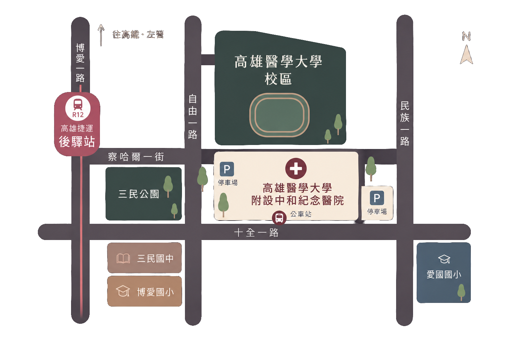
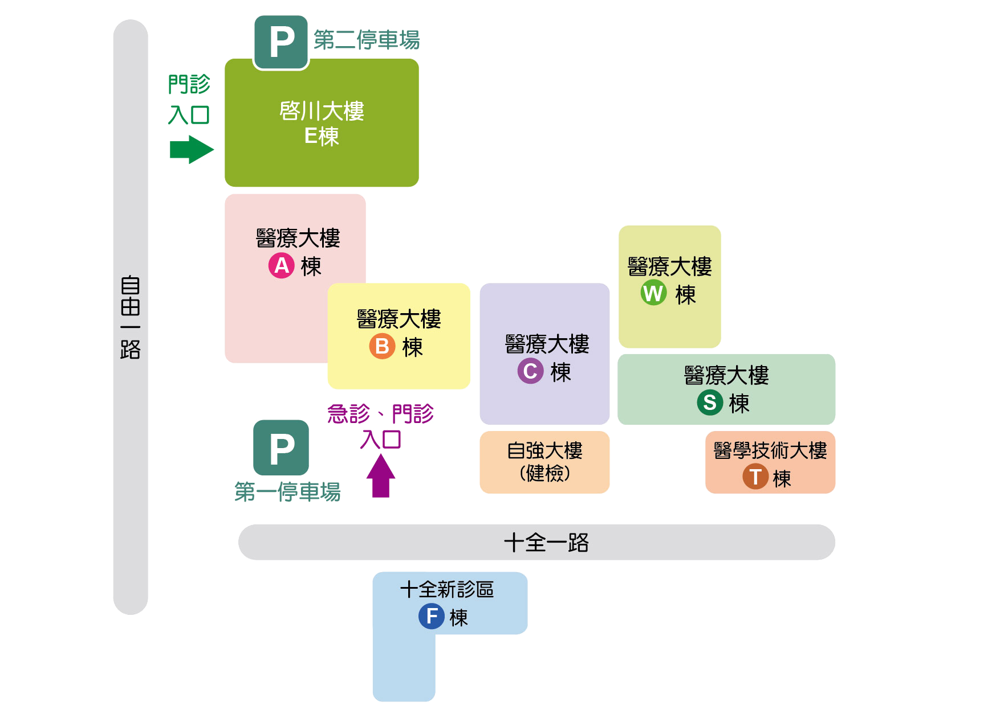

{{ st.title }}
{{ st.desc }}
How To Book
四個步驟，完成門診預約
Clinic Hours
當日網路掛號截止 {{ ss.cutoff }}
{{ ss.time }}
＊網路掛號截止時間，特殊科診除外
Location
807 高雄市三民區自由一路 100 號

{{ ac.text }}
啟川大樓 E 棟｜2 樓｜婦女醫學中心
婦產科門診、生殖醫學科及子宮頸保健抹片等門診皆位於啟川大樓 2 樓婦女醫學中心。
